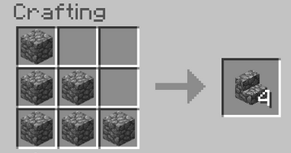

mesa de crafteo usando cualquier tipo de
mesa de crafteo usando cualquier tipo de  tablón u otros materiales como piedra o ladrillos
tablón u otros materiales como piedra o ladrillos
La escalera es un bloque con la principal función de subir bloques más rapido, aunque tambien se suele usar para decorar las casa o hacer el techo
Se consigue principalmente en una mesa de crafteo usando cualquier tipo de tablón u otros materiales como piedra o ladrillos

Tambien las puedes conseguir en los techos de las casas de las aldeas